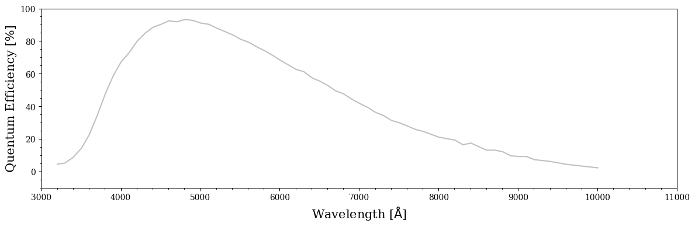
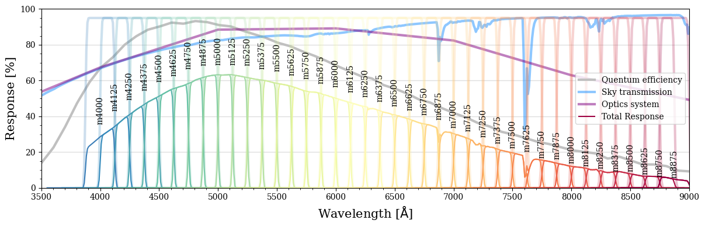
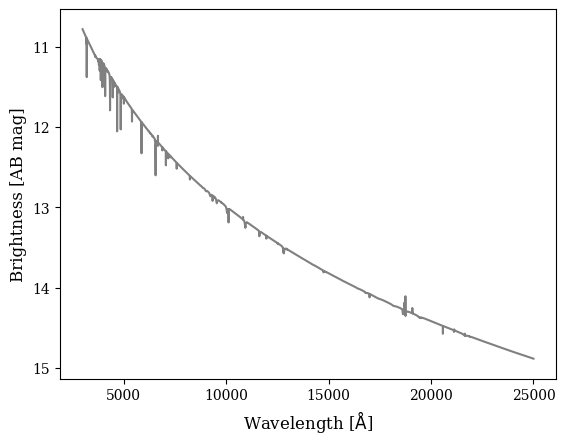

Simulator
[1]:
%load_ext autoreload
%autoreload 2
Filter
[2]:
from supy.simulator import Filter
7DT filterset by default
[3]:
filt = Filter()
filt.plot_filterset()
[3]:
<Axes: xlabel='Wavelength [$\\rm \\AA$]', ylabel='Transmission [%]'>

SDSS filterset
[4]:
filt = Filter(filterset="sdss")
filt.plot_filterset()
[4]:
<Axes: xlabel='Wavelength [$\\rm \\AA$]', ylabel='Transmission [%]'>

Manual tophat filterset
[5]:
filt = Filter(filterset="tophat", bandmin=3000, bandmax=3500, bandwidth=500, bandstep=500, bandrsp=0.5)
filt.plot_filterset()
[5]:
<Axes: xlabel='Wavelength [$\\rm \\AA$]', ylabel='Transmission [%]'>

Filter info
[6]:
filt = Filter()
filt.filterset
[6]:
Table length=1000
| wavelength | m4000 | m4125 | m4250 | m4375 | m4500 | m4625 | m4750 | m4875 | m5000 | m5125 | m5250 | m5375 | m5500 | m5625 | m5750 | m5875 | m6000 | m6125 | m6250 | m6375 | m6500 | m6625 | m6750 | m6875 | m7000 | m7125 | m7250 | m7375 | m7500 | m7625 | m7750 | m7875 | m8000 | m8125 | m8250 | m8375 | m8500 | m8625 | m8750 | m8875 |
|---|---|---|---|---|---|---|---|---|---|---|---|---|---|---|---|---|---|---|---|---|---|---|---|---|---|---|---|---|---|---|---|---|---|---|---|---|---|---|---|---|
| float64 | float64 | float64 | float64 | float64 | float64 | float64 | float64 | float64 | float64 | float64 | float64 | float64 | float64 | float64 | float64 | float64 | float64 | float64 | float64 | float64 | float64 | float64 | float64 | float64 | float64 | float64 | float64 | float64 | float64 | float64 | float64 | float64 | float64 | float64 | float64 | float64 | float64 | float64 | float64 | float64 |
| 1000.0 | 0.0 | 0.0 | 0.0 | 0.0 | 0.0 | 0.0 | 0.0 | 0.0 | 0.0 | 0.0 | 0.0 | 0.0 | 0.0 | 0.0 | 0.0 | 0.0 | 0.0 | 0.0 | 0.0 | 0.0 | 0.0 | 0.0 | 0.0 | 0.0 | 0.0 | 0.0 | 0.0 | 0.0 | 0.0 | 0.0 | 0.0 | 0.0 | 0.0 | 0.0 | 0.0 | 0.0 | 0.0 | 0.0 | 0.0 | 0.0 |
| 1009.009009009009 | 0.0 | 0.0 | 0.0 | 0.0 | 0.0 | 0.0 | 0.0 | 0.0 | 0.0 | 0.0 | 0.0 | 0.0 | 0.0 | 0.0 | 0.0 | 0.0 | 0.0 | 0.0 | 0.0 | 0.0 | 0.0 | 0.0 | 0.0 | 0.0 | 0.0 | 0.0 | 0.0 | 0.0 | 0.0 | 0.0 | 0.0 | 0.0 | 0.0 | 0.0 | 0.0 | 0.0 | 0.0 | 0.0 | 0.0 | 0.0 |
| 1018.018018018018 | 0.0 | 0.0 | 0.0 | 0.0 | 0.0 | 0.0 | 0.0 | 0.0 | 0.0 | 0.0 | 0.0 | 0.0 | 0.0 | 0.0 | 0.0 | 0.0 | 0.0 | 0.0 | 0.0 | 0.0 | 0.0 | 0.0 | 0.0 | 0.0 | 0.0 | 0.0 | 0.0 | 0.0 | 0.0 | 0.0 | 0.0 | 0.0 | 0.0 | 0.0 | 0.0 | 0.0 | 0.0 | 0.0 | 0.0 | 0.0 |
| 1027.027027027027 | 0.0 | 0.0 | 0.0 | 0.0 | 0.0 | 0.0 | 0.0 | 0.0 | 0.0 | 0.0 | 0.0 | 0.0 | 0.0 | 0.0 | 0.0 | 0.0 | 0.0 | 0.0 | 0.0 | 0.0 | 0.0 | 0.0 | 0.0 | 0.0 | 0.0 | 0.0 | 0.0 | 0.0 | 0.0 | 0.0 | 0.0 | 0.0 | 0.0 | 0.0 | 0.0 | 0.0 | 0.0 | 0.0 | 0.0 | 0.0 |
| 1036.036036036036 | 0.0 | 0.0 | 0.0 | 0.0 | 0.0 | 0.0 | 0.0 | 0.0 | 0.0 | 0.0 | 0.0 | 0.0 | 0.0 | 0.0 | 0.0 | 0.0 | 0.0 | 0.0 | 0.0 | 0.0 | 0.0 | 0.0 | 0.0 | 0.0 | 0.0 | 0.0 | 0.0 | 0.0 | 0.0 | 0.0 | 0.0 | 0.0 | 0.0 | 0.0 | 0.0 | 0.0 | 0.0 | 0.0 | 0.0 | 0.0 |
| 1045.045045045045 | 0.0 | 0.0 | 0.0 | 0.0 | 0.0 | 0.0 | 0.0 | 0.0 | 0.0 | 0.0 | 0.0 | 0.0 | 0.0 | 0.0 | 0.0 | 0.0 | 0.0 | 0.0 | 0.0 | 0.0 | 0.0 | 0.0 | 0.0 | 0.0 | 0.0 | 0.0 | 0.0 | 0.0 | 0.0 | 0.0 | 0.0 | 0.0 | 0.0 | 0.0 | 0.0 | 0.0 | 0.0 | 0.0 | 0.0 | 0.0 |
| ... | ... | ... | ... | ... | ... | ... | ... | ... | ... | ... | ... | ... | ... | ... | ... | ... | ... | ... | ... | ... | ... | ... | ... | ... | ... | ... | ... | ... | ... | ... | ... | ... | ... | ... | ... | ... | ... | ... | ... | ... |
| 9945.945945945947 | 0.0 | 0.0 | 0.0 | 0.0 | 0.0 | 0.0 | 0.0 | 0.0 | 0.0 | 0.0 | 0.0 | 0.0 | 0.0 | 0.0 | 0.0 | 0.0 | 0.0 | 0.0 | 0.0 | 0.0 | 0.0 | 0.0 | 0.0 | 0.0 | 0.0 | 0.0 | 0.0 | 0.0 | 0.0 | 0.0 | 0.0 | 0.0 | 0.0 | 0.0 | 0.0 | 0.0 | 0.0 | 0.0 | 0.0 | 0.0 |
| 9954.954954954956 | 0.0 | 0.0 | 0.0 | 0.0 | 0.0 | 0.0 | 0.0 | 0.0 | 0.0 | 0.0 | 0.0 | 0.0 | 0.0 | 0.0 | 0.0 | 0.0 | 0.0 | 0.0 | 0.0 | 0.0 | 0.0 | 0.0 | 0.0 | 0.0 | 0.0 | 0.0 | 0.0 | 0.0 | 0.0 | 0.0 | 0.0 | 0.0 | 0.0 | 0.0 | 0.0 | 0.0 | 0.0 | 0.0 | 0.0 | 0.0 |
| 9963.963963963964 | 0.0 | 0.0 | 0.0 | 0.0 | 0.0 | 0.0 | 0.0 | 0.0 | 0.0 | 0.0 | 0.0 | 0.0 | 0.0 | 0.0 | 0.0 | 0.0 | 0.0 | 0.0 | 0.0 | 0.0 | 0.0 | 0.0 | 0.0 | 0.0 | 0.0 | 0.0 | 0.0 | 0.0 | 0.0 | 0.0 | 0.0 | 0.0 | 0.0 | 0.0 | 0.0 | 0.0 | 0.0 | 0.0 | 0.0 | 0.0 |
| 9972.972972972973 | 0.0 | 0.0 | 0.0 | 0.0 | 0.0 | 0.0 | 0.0 | 0.0 | 0.0 | 0.0 | 0.0 | 0.0 | 0.0 | 0.0 | 0.0 | 0.0 | 0.0 | 0.0 | 0.0 | 0.0 | 0.0 | 0.0 | 0.0 | 0.0 | 0.0 | 0.0 | 0.0 | 0.0 | 0.0 | 0.0 | 0.0 | 0.0 | 0.0 | 0.0 | 0.0 | 0.0 | 0.0 | 0.0 | 0.0 | 0.0 |
| 9981.981981981982 | 0.0 | 0.0 | 0.0 | 0.0 | 0.0 | 0.0 | 0.0 | 0.0 | 0.0 | 0.0 | 0.0 | 0.0 | 0.0 | 0.0 | 0.0 | 0.0 | 0.0 | 0.0 | 0.0 | 0.0 | 0.0 | 0.0 | 0.0 | 0.0 | 0.0 | 0.0 | 0.0 | 0.0 | 0.0 | 0.0 | 0.0 | 0.0 | 0.0 | 0.0 | 0.0 | 0.0 | 0.0 | 0.0 | 0.0 | 0.0 |
| 9990.990990990991 | 0.0 | 0.0 | 0.0 | 0.0 | 0.0 | 0.0 | 0.0 | 0.0 | 0.0 | 0.0 | 0.0 | 0.0 | 0.0 | 0.0 | 0.0 | 0.0 | 0.0 | 0.0 | 0.0 | 0.0 | 0.0 | 0.0 | 0.0 | 0.0 | 0.0 | 0.0 | 0.0 | 0.0 | 0.0 | 0.0 | 0.0 | 0.0 | 0.0 | 0.0 | 0.0 | 0.0 | 0.0 | 0.0 | 0.0 | 0.0 |
| 10000.0 | 0.0 | 0.0 | 0.0 | 0.0 | 0.0 | 0.0 | 0.0 | 0.0 | 0.0 | 0.0 | 0.0 | 0.0 | 0.0 | 0.0 | 0.0 | 0.0 | 0.0 | 0.0 | 0.0 | 0.0 | 0.0 | 0.0 | 0.0 | 0.0 | 0.0 | 0.0 | 0.0 | 0.0 | 0.0 | 0.0 | 0.0 | 0.0 | 0.0 | 0.0 | 0.0 | 0.0 | 0.0 | 0.0 | 0.0 | 0.0 |
Response
[7]:
from supy.simulator.response import *
Optics
[8]:
plot_table(get_optics())
[8]:
<Axes: xlabel='Wavelength [$\\rm \\AA$]', ylabel='Efficiency [%]'>

Quentum efficiency
[9]:
plot_table(get_QE_factor())
[9]:
<Axes: xlabel='Wavelength [$\\rm \\AA$]', ylabel='Quentum Efficiency [%]'>

Sky transmission
[10]:
plot_table(get_sky_transmission())
[10]:
<Axes: xlabel='Wavelength [$\\rm \\AA$]', ylabel='Transmission [%]'>

Simulator
[11]:
from supy.simulator import Simulator
Plot response curve
[12]:
sdt = Simulator()
sdt.plot_response()
Adopt the default 7DT filterset
[12]:
<Axes: xlabel='Wavelength [$\\rm \\AA$]', ylabel='Response [%]'>

Calculate sensitivity
[13]:
exptime = 300
seeing = 1.5
sdt.initalize(exposure=exptime, fwhm_seeing=seeing)
sdt.plot_point_source_depth()
[13]:
<Axes: xlabel='wavelength [$\\AA$]', ylabel='Point source limits (5$\\sigma$)'>

Compare with others
[14]:
sdt.plot_point_source_depth(add_comp=True)
[14]:
<Axes: xlabel='Wavelength [$\\rm \\AA$]', ylabel='$\\rm 5\\sigma$ Depth [AB]'>

Synthesize photometry
Example 1: Feige110
[15]:
data = utils.get_testdata("Feige110")
utils.plot_data(data)
[15]:
<Axes: xlabel='Wavelength [$\\rm \\AA$]', ylabel='Brightness [AB mag]'>

[16]:
sdt.get_synphot(data)
sdt.synth_table
[16]:
Table length=40
| filter | lam | bandwidth | mag_abs | z | snr | mag_app | mag_obs | mag_err | fnu_obs | fnu_err | fnu | flam_obs | flam_err | flam |
|---|---|---|---|---|---|---|---|---|---|---|---|---|---|---|
| Angstrom | mag(AB) | mag(AB) | mag(AB) | uJy | uJy | uJy | erg / (Angstrom cm2 s) | erg / (Angstrom cm2 s) | erg / (Angstrom cm2 s) | |||||
| str5 | float64 | float64 | float64 | float64 | float64 | float64 | float64 | float64 | float64 | float64 | float64 | float64 | float64 | float64 |
| m4000 | 4010.913 | 250.000 | 11.252 | nan | 1091.397 | 11.252 | 11.253 | 0.010 | 114511.282 | 104.922 | 114611.690 | 2.1339409906559762e-13 | 1.955238465475569e-16 | 2.135812117017625e-13 |
| m4125 | 4134.015 | 250.000 | 11.279 | nan | 1176.246 | 11.279 | 11.278 | 0.010 | 111862.735 | 95.101 | 111838.117 | 1.9622848187077405e-13 | 1.6682601389167712e-16 | 1.9618529704255485e-13 |
| m4250 | 4257.559 | 250.000 | 11.335 | nan | 1226.885 | 11.335 | 11.335 | 0.010 | 106161.312 | 86.529 | 106136.751 | 1.7557623371543897e-13 | 1.4310728836013931e-16 | 1.755356125006737e-13 |
| m4375 | 4380.872 | 250.000 | 11.389 | nan | 1258.487 | 11.389 | 11.390 | 0.010 | 100894.542 | 80.171 | 100997.574 | 1.5760398445176519e-13 | 1.2523295199777686e-16 | 1.5776492701208275e-13 |
| m4500 | 4504.837 | 250.000 | 11.426 | nan | 1281.573 | 11.426 | 11.425 | 0.010 | 97734.663 | 76.261 | 97612.463 | 1.4438139474451135e-13 | 1.126595072742437e-16 | 1.4420087230842624e-13 |
| m4625 | 4628.747 | 250.000 | 11.482 | nan | 1278.294 | 11.482 | 11.482 | 0.010 | 92701.894 | 72.520 | 92745.254 | 1.2971265868506703e-13 | 1.014732697952565e-16 | 1.2977333016261817e-13 |
| ... | ... | ... | ... | ... | ... | ... | ... | ... | ... | ... | ... | ... | ... | ... |
| m8250 | 8245.499 | 250.000 | 12.611 | nan | 235.541 | 12.611 | 12.615 | 0.011 | 32660.034 | 138.660 | 32787.162 | 1.4401357192167532e-14 | 6.114172685994745e-17 | 1.4457414292417476e-14 |
| m8375 | 8373.650 | 250.000 | 12.640 | nan | 221.217 | 12.640 | 12.643 | 0.011 | 31815.560 | 143.821 | 31915.591 | 1.360287250406281e-14 | 6.149120164062451e-17 | 1.3645641031284661e-14 |
| m8500 | 8492.617 | 250.000 | 12.668 | nan | 205.446 | 12.668 | 12.665 | 0.011 | 31190.388 | 151.818 | 31110.676 | 1.2964578099448763e-14 | 6.310464024886764e-17 | 1.2931445039660473e-14 |
| m8625 | 8620.801 | 250.000 | 12.698 | nan | 186.034 | 12.698 | 12.696 | 0.012 | 30318.277 | 162.972 | 30265.662 | 1.2230098871180437e-14 | 6.57412675912755e-17 | 1.2208874182704116e-14 |
| m8750 | 8745.072 | 250.000 | 12.726 | nan | 171.782 | 12.726 | 12.722 | 0.012 | 29584.995 | 172.225 | 29471.531 | 1.1597528721711906e-14 | 6.751325274182963e-17 | 1.15530500454629e-14 |
| m8875 | 8864.730 | 250.000 | 12.753 | nan | 152.915 | 12.753 | 12.741 | 0.012 | 29092.407 | 190.252 | 28748.377 | 1.1098629740775339e-14 | 7.258048117520959e-17 | 1.0967383790341948e-14 |
[17]:
sdt.plot_syn_spectrum(add_data=True)
[17]:
<Axes: xlabel='Wavelength [$\\rm \\AA$]', ylabel='Brightness [AB mag]'>

Example 2: High-z QSO Model
[18]:
data = utils.get_testdata("Highz_QSO")
sdt.get_synphot(data, show_plot=True)

Example 3: Kilonova spectrum
[19]:
data = utils.get_testdata("AT2017gfo_2.4d")
sdt.get_synphot(data, show_plot=True, flux_unit="flam")